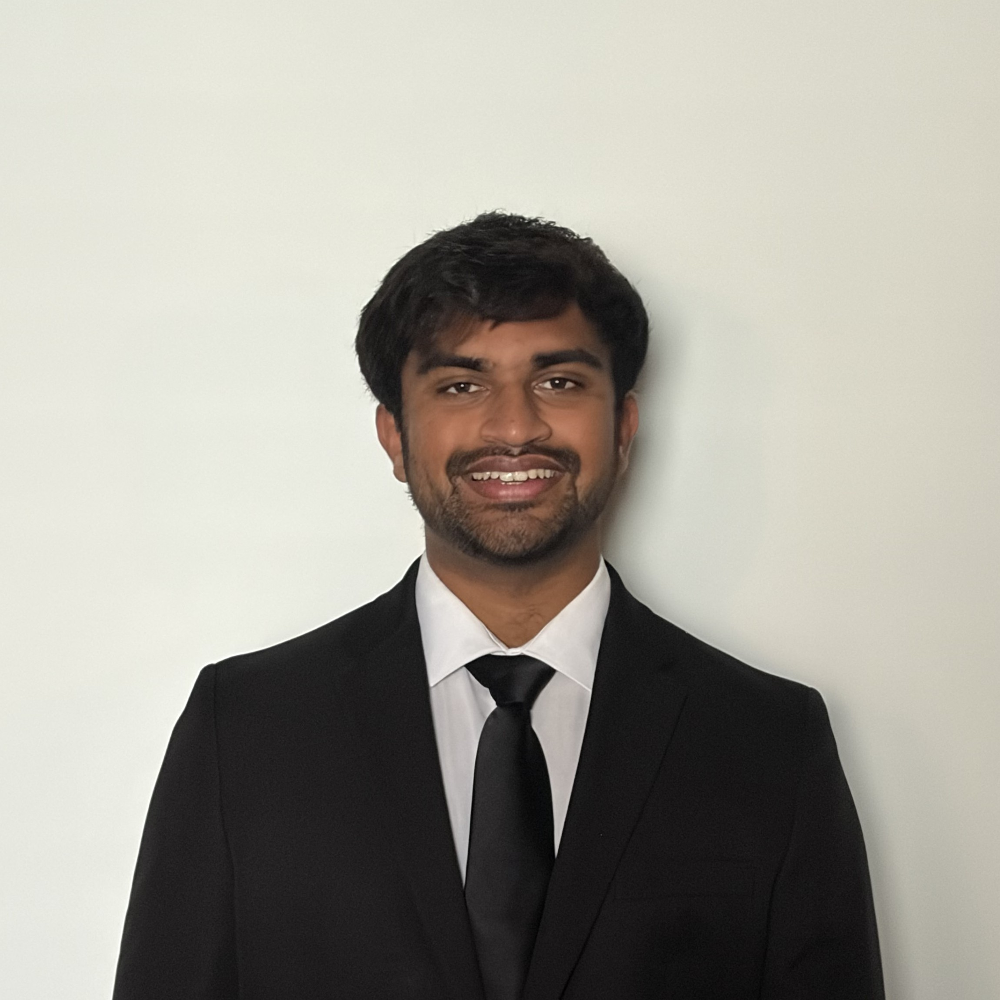
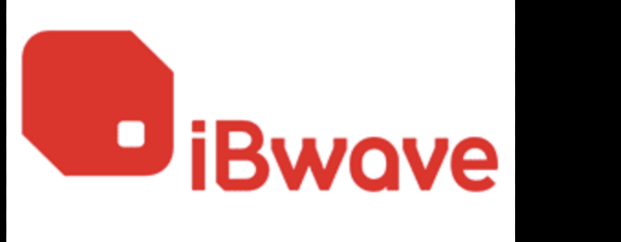
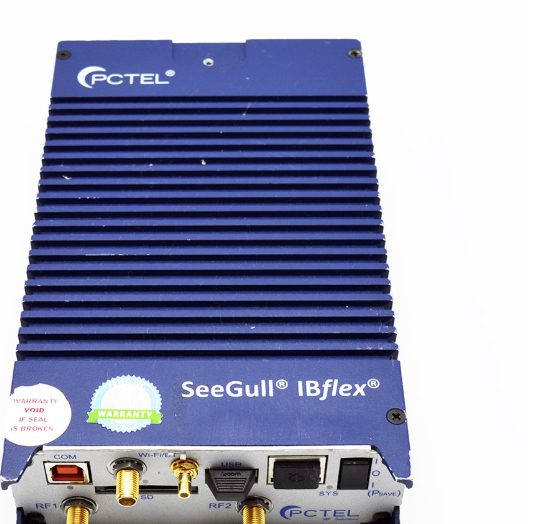
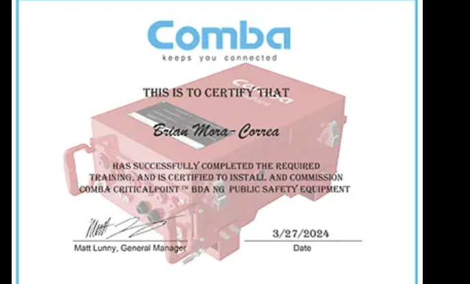

Welcome to my engineering portfolio, featuring projects in hardware design, RF systems, and digital electronics. From personal builds and university coursework to professional work experience, each project reflects my passion for hands-on engineering and problem-solving. Explore the projects section to see the engineering behind each build.

Hey there! I'm Krish, an Electrical Engineering student at UT Dallas whose curiosity for how things work started with LEGOs and Hot Wheels tracks and grew into a passion for building real electrical systems. Through my co-op at Mobile Communications America, I've worked hands-on with RF systems and LTE/5G network testing, building coverage designs for sites ranging from airports and data centers to college campuses. At UT Dallas, I'm part of Dallas Formula Racing and worked on PCB design, wire harness design, and system integration for a Formula-style EV. I stay involved through IEEE, tutoring underclassmen, and attending networking events. My interests center on wireless systems, telecommunications, and board-level hardware design. I'm actively seeking full-time opportunities to bring my skills to the industry and contribute to meaningful engineering work.
Click any role to expand details.
Half-wave dipole antenna designed and simulated in HFSS at 2.4 GHz. Analyzed return loss, radiation pattern, gain, and impedance matching to a 50Ω feed.
Python tool that models the full RF signal chain — computing FSPL, RSS, link margin, MAPL, and max coverage radius across LTE, WiFi, and 5G scenarios.
RF & Wireless project currently in development.
Python-based BMS simulator modeling SOC estimation, SOH degradation, thermal behavior, and multi-cell balancing using Coulomb counting and a Kalman Filter.
Dual-output 3.3V/5V regulated supply PCB designed in KiCad — schematic, footprint layout, and 3D render complete. Pending fabrication.
Boost converter for the UTD Formula Racing EV team — schematic, LTspice simulation, and full KiCad PCB layout with 3D model preview.
FSM for computer boot process in Verilog. Custom CMOS cell library built in Cadence Virtuoso, synthesized and verified with waveform simulation.
A two-player memory game built with two Arduinos for a class project. Match the growing LED sequence using LCD prompts and push buttons — built for fun and friendly competition.
Soldered PCB with LM555CN timer IC. Analyzed chip behavior using a virtual oscilloscope in Multisim. First hands-on soldering experience.
4-input voting machine using K-map simplification, Boolean algebra, and NAND/NOR chips — implemented in Multisim and on a physical breadboard.
AOI/NAND/NOR circuit with PLD mode chip programming, integrated with a breadboard for a physical seven-segment display output.
Full 12-hour clock using async/sync SSI/MSI counters and flip-flops — four separate stages combined onto a single clock signal driving a seven-segment display.
First engineering project — isometric sketching into a full Autodesk Inventor 3D model with parts, assemblies, and exploded views.
Irregular-shaped themed assembly using advanced Inventor constraints: loft, revolve, circular pattern, shell, and hole tools.
Mechanical automata using angle constraints and Drive function to animate handle-driven cam-follower peg motion in Inventor — featuring a custom sports theme with individually modeled props.
Full mini train modeled after Thomas the Choo Choo Train requiring precise dimensional accuracy — where ±0.01 errors cascade through the entire assembly. Strongest lesson in engineering precision.
VEX robotics AGV with closed-loop control for autonomous cargo delivery. Resolved motor power malfunction through systematic troubleshooting. Documented with RobotC pseudocode.
Lab work completed throughout my EE coursework at UTD. Click a course to view details.



Always open to discussing new opportunities, engineering projects, research, or grad school. Feel free to reach out — I'd love to talk about all things EE!